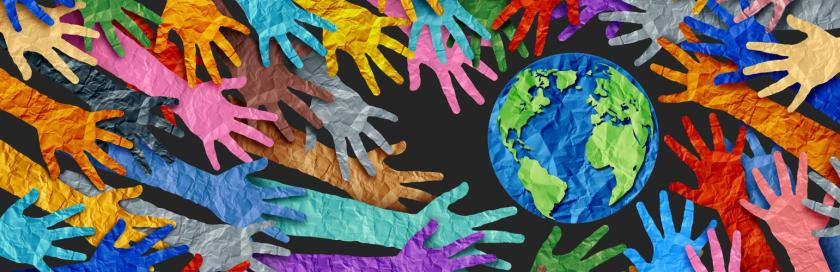

3.200+
Pessoas impactadas
Desde 2012 construindo pontes solidárias
Somos uma organização não governamental dedicada a conectar voluntários, doadores e comunidades vulneráveis por meio de projetos educacionais, ambientais e de assistência social.
3.200+
Pessoas impactadas
480
Voluntários ativos
27
Projetos em andamento
12
Anos de atuação

O Legião da Solidariedade nasceu do desejo de um grupo de estudantes e profissionais em transformar boas intenções em ações concretas. Atuamos em parceria com escolas públicas, cooperativas de reciclagem e centros comunitários para gerar impacto social mensurável e duradouro.
Acreditamos que a transformação social acontece quando conhecimento, tempo e recursos são compartilhados de forma coletiva e transparente.
O seu tempo pode ser exatamente o que uma comunidade precisa agora.
Cadastre-se como voluntário